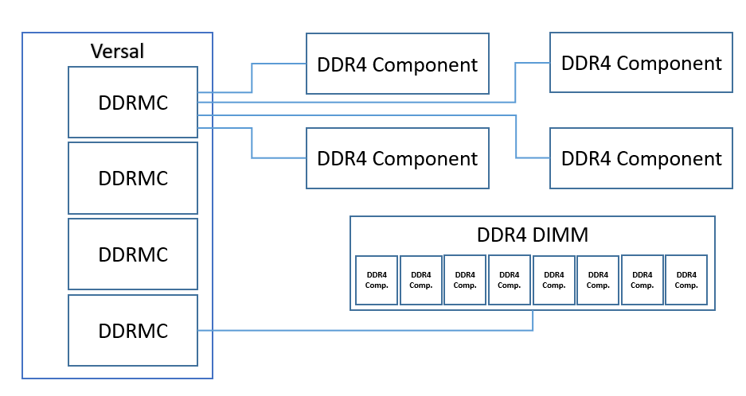

DDR¶
The DDR Memory Controller (DDRMC) is an integrated core in the Versal architecture. During device configuration, each Memory Controller will calibrate with the external memory devices to ensure a stable data channel for each byte lane.
The status and result of this memory calibration is accessible from the ChipScoPy DDRMC API. The majority of data in the DDRMC is related to calibration, which is only run once initially. Therefore the majority of data in the DDRMC is static and the user should not expect many data changes when reloading/refreshing DDRMC data, except certain features specifically denoted as post-calibration trackers, or until the Versal device gets reprogrammed.
{kind=link}
Details¶
Calibration¶
Calibration involves many stages which are vary dependent on the type of memory interface being used as well as the memory frequency. These stages align the clock strobes and data for each byte lane, adjusting for the trace lengths for the given board layout.
Margins¶
The width of the data window (margin) for each byte lane is measured in two stages, one which uses a simple data pattern and one which uses a more aggressive (complex) data pattern.
If the speed of the memory interface is slow, the complex margin stage may be skipped to save calibration time. For each stage, the read and write margins for the rising and falling edges of the strobe clock are measured and reported.
DDRMC Properties¶
For each stage of calibration, registers which store the intermediate and final results are updated. There are also configuration registers which describe the settings in use for the current memory controller configuration, and as well as registers dedicated for post-calibration features.
All of these register names and values should be provided by the software in format of DDRMC properties to Xilinx technical support in the event of calibration failure for troubleshooting.
API Functions¶
- class chipscopy.api.ddr.ddr.DDR(ddr_node)[source]¶
This class contains the top level API functions to interact with the integrated DDR memory controller debug core(s) on Versal devices.
- check_eye_scan_height(unit_index=0)[source]¶
Calculate and obtain the VRef swing/height found from a margin scan by a specified unit index. The height is defined by having the lowest point of VRef that a non-zero margin window starts, and ends with the highest VRef point found in the same fashion. By default, it tries to process from the scan data found in the most recent 2D eye scan run. Users have the option to load scan data first prior to using this function, in order to process specific set of scan data, see load_eye_scan_data().
- Parameters:
unit_index (
int) – Specify the index from a set of scan data users intend to display, based on unit mode found in the scan settings (bit, nibble, byte)- Returns:
A list, which contains lists of floating point values representing the VRef percentage values in the following item order: [VRef swing, minimum VRef, maximum VRef] For Read Margin, two sets of data list are being returned. (First item from the list is for Rising Clock edge, and the second is for Falling Clock edge) For Write Margin, only one set of data list will be returned.
- check_eye_scan_window(unit_index=0, default_vref=False)[source]¶
Calculate and obtain the widest 2D eye scan margin window by a specified unit index. This function also checks the margin window found at default VRef setting determined by the memory controller. By default, it tries to process from the scan data found in the most recent 2D eye scan run. Users have the option to load scan data first prior to using this function, in order to process specific set of scan data, see load_eye_scan_data().
- Parameters:
unit_index (
int) – Specify the index from a set of scan data users intend to display, based on unit mode found in the scan settings (bit, nibble, byte)default_vref (
bool) – Optional argument, default to False, which means the function will check and report the widest margin window found and along with its corrosponding vref value at the earliest point. If set to True, the function will report margin window found at its default VRef point instead.
- Returns:
A list, which contains tuples of (int, float) will be returned. The first integer item from the tuples represents the window margin found after a scan, and the second item indicates the VRef setting value in floating point.
For Read Margin, two data results are being returned. (First tuple of data is for Rising Clock edge, and the second is for Falling Clock edge) For Write Margin, only one tuple result will be returned.
- display_eye_scan(unit_index=0, return_as_list=False, display_type='dynamic', get_margin_only=False)[source]¶
Assemble and display 2D eye scan drawing in chart format. By default, it tries to process and draw from the scan data found in the most recent 2D eye scan run. Users have the option to load scan data first prior to using this function in order to display specific set of scan data, see load_eye_scan_data().
By default, if no unit_index is specified, unit zero from the scan data will be displayed. For read margins, both rising and falling edge clock scan data will be processed and displayed.
- Parameters:
unit_index (
int) – Specify the index from a set of scan data users intend to display, based on unit mode found in the scan settings (bit, nibble, byte)return_as_list (
bool) – Optional argument, default to False. If set to True, the function will not display graphs by default. Instead, it returns a list of the grapghing objects back to the caller.display_type (
str) – Optional argument, default to dynamic. If set to static, a static image will be returned. If set to dynamic, a dynamic, interactive javascript view will be returned.get_margin_only (
bool) – Optional argument, default to False. If set to True, this API call will process scan data only, per the specified unit_index, find its widest margin windows and return the values and along with their VRef points as a list of tuples. No graphing results will be given.
- Returns:
A list of Figure objects from Plotly, if return_as_list is specified as True, None is return otherwise by default, but graphs will be displayed in a browser.
If optional argument get_margin_only is set to True. A list, which contains tuples as (int, float) representing the widest window margin found and along with their VRef points after a scan is returned.
For Read Margin, two data results are displayed or returned. (First data for Rising Clock edge, and the second for Falling Clock edge) For Write Margin, only one data result will be displayed or returned.
- get_cal_margin_mode()[source]¶
Get the availability of windows margin mode generated from a calibration run
Args:
- Returns:
- A dictionary where
Key = name of margin mode Val = True or False value indicating the availability
- get_cal_stages()[source]¶
Get the decoded calibration stages results happened from a calibration run
Args:
- Returns:
- A dictionary where
Key = calibration stage name Val = stage calibration result
- get_cal_vref(unit_index=0)[source]¶
Only supported on Gen5 DDRs. This function finds and returns the calibrated VRef in percentage value per specified unit index. By default, it tries to process from the scan data found in the most recent 2D eye scan run. Users have the option to load scan data first prior to calling this function, in order to process specific set of scan data, see load_eye_scan_data().
- Parameters:
unit_index (
int) – Specify the target index within a set of scan data, based on unit mode found insettings (the scan) –
- Returns:
A floating point number that represents the calibrated VRef in percentage value. Note that this number will be defaulted to zero if the calibrated VRef cannot be found.
- get_eye_scan_default_read_vref()[source]¶
A helper function for Gen5 DDRMC designs for querying default Read VRef value used during Calibration, in encoded format for control registers (not in percentage format).
Args:
- Return type:
int- Returns:
A calculated value of default Read VRef done during Calibration
- get_eye_scan_default_write_vref()[source]¶
A helper function for Gen5 DDRMC designs for querying default Write VRef value used during Calibration, in encoded format for control registers (not in percentage format).
Args:
- Return type:
int- Returns:
A calculated value of default Write VRef done during Calibration
- get_eye_scan_vref_percentage(vref)[source]¶
A user helper function that takes in an encoding vref value intended for the margin scan, and converts it into a percentage value based on the current scan mode and memory configuration detected from the current hardware.
- Parameters:
vref (
int) – For Read mode, valid integer range between 0 to 1023 For Write mode, valid integer range between 0 to 50- Return type:
float- Returns:
A translated percentage number in floating point
- get_property(property_names=None, done=None)[source]¶
Get the property value mapped to DDRMC core
- Parameters:
property_names – single string or list of string of property names (if None specified, all properties available will be queried and returned)
done (
Optional[DoneHWCommand]) – Optional command callback that will be invoked when the response is received
- Returns:
- A dictionary, where
Key = property name Val = property value
- is_user_enabled()[source]¶
Find out whether the DDRMC core is user enabled or not after Versal device configuration
Args:
- Returns:
Status value in Bool
- load_eye_scan_data(file_name)[source]¶
Load the eye scan 2D margin data from a data file
- Parameters:
file_name – the file name or full path for the data file to be read and load
Returns:
- refresh_cal_margin(done=None)[source]¶
Refresh the calibration windows margin analysis of DDRMC
- Parameters:
done (
Optional[DoneHWCommand]) – Optional command callback that will be invoked when the response is received
Returns:
- refresh_cal_status(done=None)[source]¶
Refresh the main calibration status of DDRMC
- Parameters:
done (
Optional[DoneHWCommand]) – Optional command callback that will be invoked when the response is received
Returns:
- refresh_health_status(done=None)[source]¶
Refresh the overall health status analysis of DDRMC
- Parameters:
done (
Optional[DoneHWCommand]) – Optional command callback that will be invoked when the response is received
Returns:
- report(to_file=False, file_name=None)[source]¶
Run a report on the current statuses and analytical data of the DDRMC
- Parameters:
to_file – specify True to have the report saved to a file
file_name – the file name or full path for the report file to be saved
Returns:
- run_eye_scan(done=None)[source]¶
Kick off a run on 2D margin analysis and prepare scan data which is needed to draw an eye scan graph. The default scan settings will be used if users have not configured with new settings. See the following related commands for more info:
save_eye_scan_data() load_eye_scan_data() display_eye_scan() check_eye_scan_window() check_eye_scan_height()
- Parameters:
done (
Optional[NewType()(DoneFutureCallback,Callable[[ForwardRef],None])]) – Optional command callback that will be invoked when the scan is finished- Return type:
bool- Returns:
Boolean value indicating success of the 2D margin scan
- save_eye_scan_data(file_name=None)[source]¶
Save the eye scan 2D margin data from the most recent run to a file in CSV format
- Parameters:
file_name – the file name or full path for the data file to be saved. A default file name will be given if none is supplied.
Returns:
- select_eye_scan_prbs_pattern(choice)[source]¶
Select 2D eye scan traffic pattern to specific PRBS modes.
- Parameters:
choice (
int) –- Choice number valid between 0 and 2 only and corrosponding to following pattern:
PRBS 23
PRBS 10
PRBS 7
Returns:
- set_eye_scan_complex_pattern()[source]¶
Set 2D eye scan traffic pattern to complex mode
Args:
Returns:
- set_eye_scan_rank(rank_num)[source]¶
Set the target rank number on the DDR for 2D eye scan to run on. There will be 4 total possible rank selections. For single slot designs, there will be quad ranks. For dual slot designs, there will be dual ranks per slot. 2D Margin Scan can only be performed on one rank at a time, and not in parallel.
- Parameters:
rank_num (
int) – Rank number valid between 0 and 3 on the DDR for 2D Margin to be run on.
Returns:
- set_eye_scan_simple_pattern()[source]¶
Set 2D eye scan traffic pattern to simple mode
Args:
Returns:
- set_eye_scan_vref_max(vref)[source]¶
Set 2D eye scan desired maximum vref value to scan
- Parameters:
vref (
int) – For Read mode, valid integer range between 0 to 1023 For Write mode, valid integer range between 0 to 50- Return type:
float- Returns:
A translated percentage number in floating point if the input VRef is set successfully
- set_eye_scan_vref_min(vref)[source]¶
Set 2D eye scan desired minimum vref value to scan
- Parameters:
vref (
int) – For Read mode, valid integer range between 0 to 1023 For Write mode, valid integer range between 0 to 50- Return type:
float- Returns:
A translated percentage number in floating point if the input VRef is set successfully